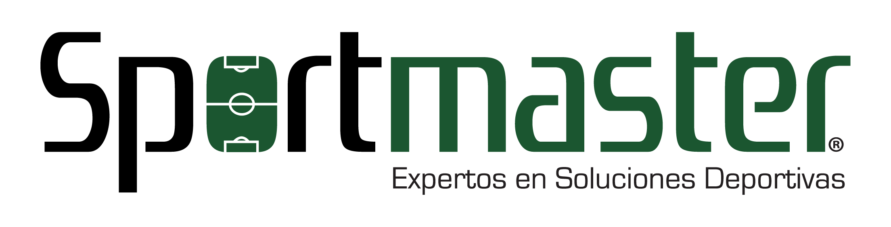
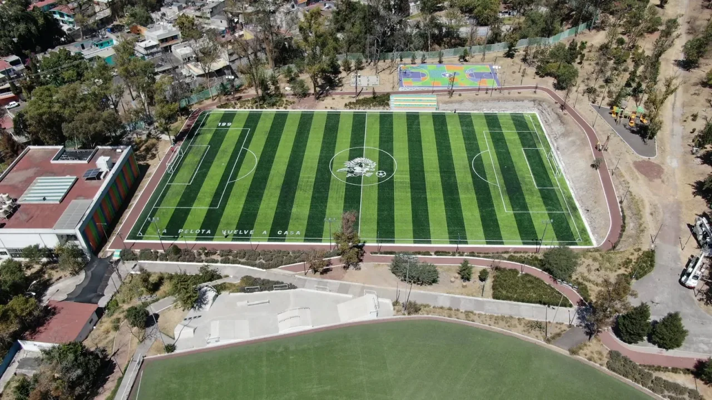

$230/m²+ IVA
Precio incluye instalación
Incluye instalación:
- Pasto sintético deportivo instalado
- Mano de obra profesional
- Pegamento y uniones
- Materiales de instalación

Construcción profesional de canchas de fútbol 7, soccer y rápido. Sportmaster México: 15 años, 6,500+ proyectos, garantía 9 años en pasto.
Ofrecemos la mejor relación calidad-precio en pasto sintético deportivo instalado por profesionales.
El costo final depende de:
La base de concreto o asfalto no está incluida en este precio. La prepara el contratista de obra civil que tú elijas; nosotros instalamos sobre la base ya nivelada.
En Sportmaster fabricamos e instalamos superficies deportivas para proyectos reales: clubes, escuelas, ligas, municipios y desarrollos privados en Ciudad de México y Área Metropolitana. Calculamos el costo de acuerdo con medidas, uso y especificaciones técnicas.
Pasto sintético deportivo para canchas compactas, academias y proyectos comerciales.
Proyecto a medidaSolución rentable para canchas comerciales, ligas, escuelas y complejos deportivos.
Alta demandaSistema resistente para uso intensivo, rebote consistente y operación diaria.
Uso intensivoSuperficie profesional para campos completos con alto tráfico deportivo.
Campo completoPasto sintético de alto impacto para entrenamientos, partidos y uso rudo.
Alto impactoCancha de pasto sintético para ligas recreativas, torneos y escuelas.
Uso recreativoInstalación profesional para diamantes deportivos e instituciones públicas o privadas.
InstitucionalSuperficie especializada para juego rápido, drenaje y durabilidad comprobada.
Superficie técnicaInstalamos canchas listas para operar, con pasto sintético deportivo, accesorios y acabados según el alcance de cada proyecto.
En Sportmaster no damos precios al aire: revisamos medidas, uso, ubicación y requerimientos para darte una cotización real.



Cotiza tu cancha completa según medidas, deporte, uso y ubicación. Respuesta en 20 minutos por WhatsApp.
Sportmaster trabaja con clientes particulares, institucionales y deportivos en todo México. Usamos pasto sintetico deportivo fabricado bajo estándares internacionales y materiales diseñados para operación amateur, profesional y de alto tráfico.
Llena este formulario o mándanos un WhatsApp directo. Te contactamos con cotización por escrito el mismo día.
Respuestas rápidas sobre precio, instalación, garantía y cobertura en Ciudad de México y Área Metropolitana.
Una cancha de fútbol 7 de 800 m² cuesta desde $230 MXN/m² + IVA, lo que equivale a aproximadamente $184,000–$280,000 MXN solo en pasto sintético e instalación, según el tipo de pasto seleccionado (30, 40 o 50 mm). La base civil se cotiza por separado con el contratista de obra.
Cotizar por WhatsAppLa instalación incluye: suministro del pasto sintético deportivo importado de polietileno de alto rendimiento, transporte a obra en CDMX, instalación profesional sobre base civil ya preparada, sellado de juntas, marcación de líneas de juego y entrega final.
No incluye: preparación de la base civil, drenajes, alumbrado LED, malla perimetral ni porterías. Estos accesorios se cotizan por separado a solicitud del cliente.
Una cancha de fútbol 7 estándar se instala en 5 a 7 días naturales, una vez que la base civil está terminada, nivelada y seca. Para canchas de fútbol 11 o proyectos con múltiples canchas, el plazo se ajusta según las dimensiones totales del proyecto.
Sí. Sportmaster instala canchas en las 16 alcaldías de la Ciudad de México y en los principales municipios del Área Metropolitana: Naucalpan, Tlalnepantla, Atizapán, Huixquilucan, Cuautitlán Izcalli, Coacalco, Ecatepec, Nezahualcóyotl y Chimalhuacán.
Con más de 3,500 proyectos instalados en los 32 estados de México, también atendemos obras fuera de la zona metropolitana.
El pasto sintético Sportmaster cuenta con 9 años de garantía de fábrica contra decoloración por rayos UV y 2 años de garantía en mano de obra de instalación. La garantía aplica con uso deportivo normal y mantenimiento básico recomendado por el fabricante.
Sí. Sportmaster tiene un programa específico para instituciones educativas con descuentos por volumen y opciones de pago diferido. También participamos en programas gubernamentales como SOBSE, SEDATU, CEFUT, PILARES, UTOPÍA y La Escuela es Nuestra.
Al cotizar, indica que el proyecto es para una institución educativa para recibir la propuesta correspondiente.
Sí. Sportmaster fabrica e instala canchas para fútbol 5, fútbol 7, fútbol rápido (soccer) y fútbol 11. El tipo de pasto varía según las dimensiones y la intensidad de uso esperada: 30 mm para uso amateur, 40 mm para uso intermedio y 50 mm para uso profesional o intensivo.
Da clic en el botón de WhatsApp y envía tres datos: (1) medidas aproximadas de tu cancha, (2) alcaldía o municipio, y (3) si la base civil ya está lista. Recibirás una cotización formal en menos de 20 minutos en días hábiles.
Escribir por WhatsAppSí. La base civil (concreto, asfalto o tezontle compactado) debe estar terminada y nivelada antes de la instalación del pasto. Sportmaster se especializa exclusivamente en la instalación del pasto sintético sobre la base ya preparada por el contratista de obra del cliente. Esto reduce costos totales y te da control directo sobre la obra civil.
El precio del pasto sintético deportivo instalado comienza desde $230/m² + IVA, con instalación incluida. El costo sube según el modelo elegido: $230–$280/m² pasto 30 mm (amateur), $300–$360/m² pasto 40 mm (intermedio), $380–$450/m² pasto 50 mm (profesional). A mayor cantidad de m², mejor precio por volumen.
Ver precio para tu proyectoInstalamos canchas de pasto sintético en las 16 alcaldías de CDMX y los principales municipios del Estado de México conurbado.
Atención directa en toda la CDMX, con tiempos de respuesta menores a 24 horas.
Municipios del Estado de México con cobertura directa para proyectos deportivos.
Cotizamos canchas de fútbol con pasto sintético segun tu proyecto.
Cotizar por WhatsApp